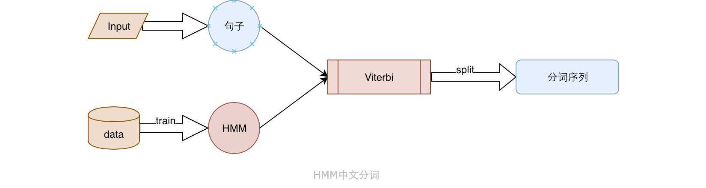

HMM到中文分词

HMM隐马尔科夫模型一直是个很困扰，感觉上又很难的点，这是一篇个人理解的大白话文，去记录HMM是如何用于中文分词的。上面这张图展示的就是一个序列生成的过程，也是一个马尔科夫决策过程。这里说的是「马尔科夫」并不是「隐马尔科夫」。
MM(马尔科夫)到HMM(隐马尔科夫)
上图中有两个状态：R，S,R状态可以变转变为S状态，R也可以转变为R，S也可以转变为S，加入一开始我们以某种概率选择一种状态R或者S，然后以这个状态为初始不断地选择下一个状态，这样就形成了一个观察到的状态序列，我们叫做观测序列。我们发现这个观测序列中的每一个状态都是状态集中的一种。那同样的当我们没办法直接观察到原始状态的时候，我们就说我们想得到的状态序列是隐藏的。这就是「HMM(隐马尔科夫)」。而我们能观测到的观测序列是另一种状态，比如说r,s。简单来说：
MM:(R,S)——>R,R,S,S,S,S,R,S....状态==观测
HMM:(R,S)——>?,?,?,?,?,?,?,?....状态(隐)
r,s,r,s,s,s,r,s....观测
这就是MM和HMM的区别。
HMM中不得不说的五元组
开始的图中已经提到了状态集，观测集，而生成不同的序列取决于各个状态之间的转移概率矩阵,上图就是以如下的转移矩阵进行状态转换的：
| 转移概率 | R | S |
|---|---|---|
| R | 0.9 | 0.1 |
| S | 0.1 | 0.9 |
当无法观测到状态序列的时候，状态序列和观测序列之间就存在一种概率关系，即：当观测为r时，状态为s的概率。这种概率关系计做发射概率矩阵如下：
| 发射概率 | r | s |
|---|---|---|
| R | 0.8 | 0.2 |
| S | 0.1 | 0.9 |
而最后一个就是初始状态分布,他决定了序列的开始，而开始总是结果有着一定的影响，那么他到底是如何影响的呢，这就与HMM的数学假设有关了。
HMM的三个基本假设
数学中经常会用到很多的假设，因为在真实环境中影响问题的因素多种多样，假设通常用来简化问题，从而找到问题的解法。否则很多问题将无法求解。
- 有限历史性假设：当前的状态取决于他前那一刻状态，这就为什么初始分布会对对状态序列有影响了。
- 输出独立性假设：输出仅与当前状态有关，换句话说：观测序列当前值仅与其对应的状态序列当前值有关，再简单点来说：t时刻观测到r还是s,仅取决于t时刻状态时R还是S。
- 齐次性假设：每个时刻的状态取决于前一刻的状态，而与时间没有关系。简单来说：状态不受时间影响。 有了假设，有了HMM核心的五元组就可以解决三个问题，这其中就包括中文分词。
HMM解决的三大问题
- 1、求解观察值序列：给定HMM其他的四元组求解一个观察序列的概率，采用前向算法
- 2、求解状态值序列：给定HMM其他的四元组求解一个最有可能生成观测序列的状态序列。 如：
中文分词，语音识别，采用Viterbi算法 - 3、学习HMM模型：已知观测序列，去学习HMM模型,采用
中文分词的解决方案
如上所述：中文分词就是HMM模型+一句话(观测序列)+viterbi算法去求解状态值序列。而中文分词的状态值序列就是一个状态集（B,E,M,S）的序列，S:单字成词，B:一个词的开头，E:一个词的结尾，M：一个词的中间。
比如说：
我喜欢秦皇岛的阳光这句话，我们得到一个最可能的状态序列：SBEBMESBE.这个状态序列表示的就是分词的结果，因此得到的分词结果就是：我/喜欢/秦皇岛/的/阳光
这里面有两个问题：
- HMM模型怎么来的？->预训练模型
- 如何求解状态序列？->'viterbi算法'
也就是说我们的分词算法调用一个已经训练好的HMM模型加上‘viterbi算法’就可以实现中文分词,如下图：
中文分词的Viterbi算法
Viterbi算法是一种
动态规划算法，动态规范算法通常是用来求解最优化问题，而在中文分词中则用来求解最大化观测序列概率的状态序列。也就是说求解一个状态序列使得到的观测序列无限的接近于我们看到的序列。
以上面的「我喜欢秦皇岛的阳光」为例，只有当我们生成的序列是「SBEBMESBE」的时候，生成『我喜欢秦皇岛的阳光』句子的概率才达到最大。此时『SBEBMESBE』就是我们要求的状态序列。为了方便后面的描述和代码下面更加精确的定义五元组：
- 状态集：O(B,S,E,M)
- 观测集：S(我，喜，欢，秦，皇，岛，的，阳，光)
- 初始概率分布：PS(0.4,0.6,0,0)
转移概率矩阵:当前时刻状态为某个值的时候下一刻状态为某个值得概率
S B M E S 0.5 0.5 0 0 B 0 0 0.5 0.5 M 0 0 0.5 0.5 E 0.4 0.6 0 0 发射概率矩阵:状态为某个值的时候观测到某个值得概率
我 喜 欢 秦 皇 导 的 阳 光 S B M E
有了如上的五元组，我们就可以用Viterbi算法解出最可能的状态序列。以下是jieba分词中的Viterbi实现，参数就是五元组，
'''jieba分词中的Viterbi实现'''
def viterbi(obs, states, start_p, trans_p, emit_p):
V = [{}] # tabular
path = {}
for y in states: # init
V[0][y] = start_p[y] + emit_p[y].get(obs[0], MIN_FLOAT)
path[y] = [y]
for t in xrange(1, len(obs)):
V.append({})
newpath = {}
for y in states:
em_p = emit_p[y].get(obs[t], MIN_FLOAT)
(prob, state) = max(
[(V[t - 1][y0] + trans_p[y0].get(y, MIN_FLOAT) + em_p, y0) for y0 in PrevStatus[y]])
V[t][y] = prob
newpath[y] = path[state] + [y]
path = newpath
(prob, state) = max((V[len(obs) - 1][y], y) for y in 'ES')
return (prob, path[state])
核心部分就是从第一个时刻开始(即顺序遍历观测集)，对于每一个时刻(每一个观测值)计算出得到这个观测值最大概率P,和对应的状态值，有了这个概率和状态值，就可以求得下一时刻的最大概率P和对应的状态值，知道遍历完这个观测值序列，我们就得到了一个值得最终概率最大的状态值序列，而这个序列就是我们所求的。(每一时刻的最大不代表全局最大，我们要找的是全局概率最大的路径。)
其他问题
当状态值是『B S E M』的时候，HMM可以用来做中文分词，同样的当状态值是『n,v,...』等词性的时候，HMM就可以用来解决词性标注的问题。同样的命名实体识别的问题也可以这样解决。
HMM中当假设当前时刻状态只与前一刻状态相关的时候，我们称之为“一阶隐马尔科夫模型”，当假设当前时刻状态与前两刻状态有关的时候我们称之为“二阶隐马”。介数越高，复杂度越高，计算量越大，同时越接近真实的语言场景。